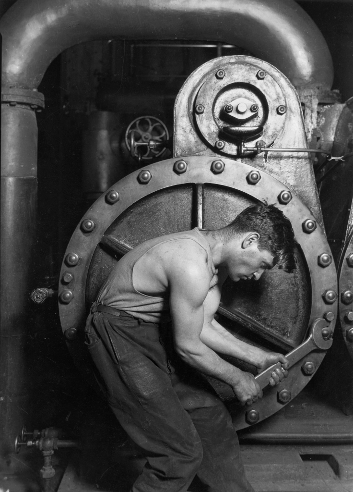
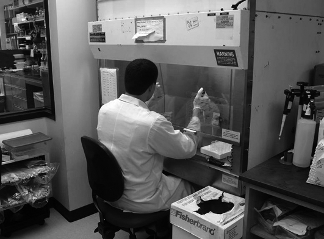
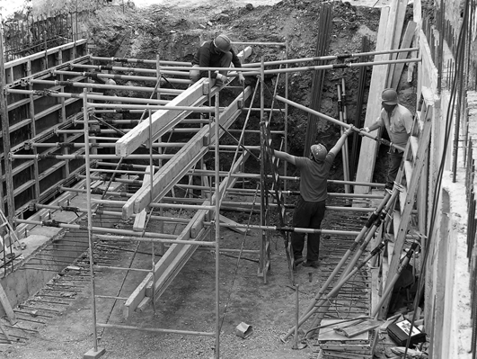
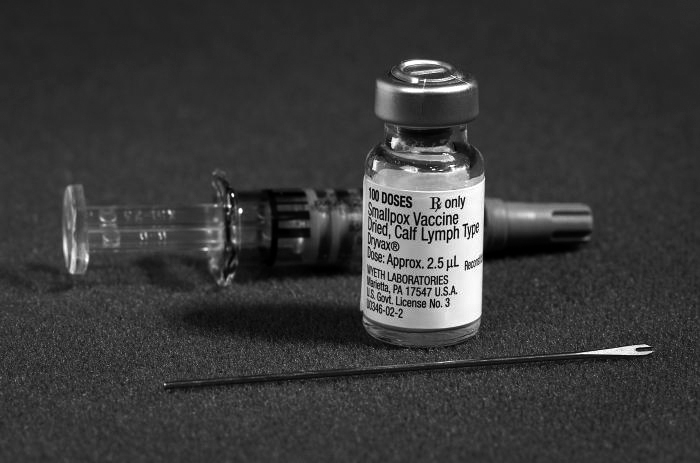
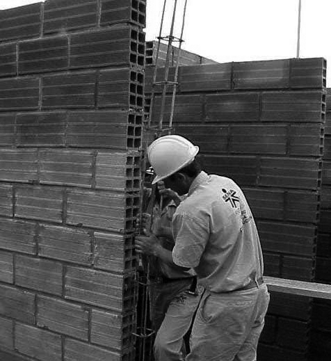
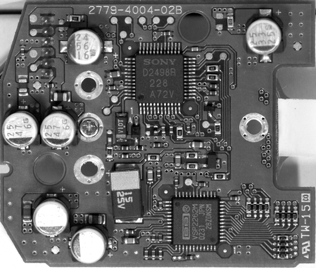
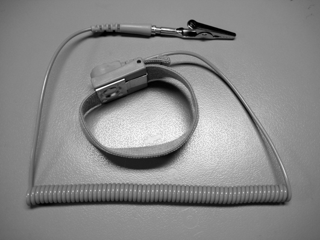
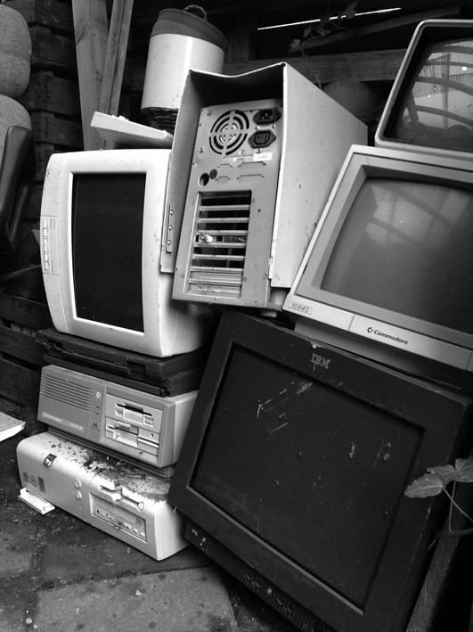
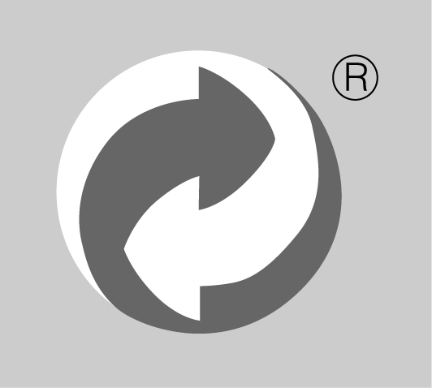

Prevenció de riscos laborals
Els sectors productius
Els sectors econòmics són cadascuna de les parts en què es divideix l’economia per al seu estudi d’acord amb diversos criteris. Ha esdevingut clàssica la divisió en tres sectors productius: primari, secundari i terciari.
El treball, en totes les seves vessants i sectors productius, és una activitat inherent de l’ésser humà que comprèn des de factors de subsistència fins a la millora de l’estatus social.
Amb el pas del temps, a les feines de subsistència varen seguir les de millora de la qualitat de vida i el desenvolupament de les ciències, de les arts, del comerç i del transport, de manera que la vida humana, en el món més desenvolupat, ha dedicat cada vegada menys temps a les tasques d’alimentació per realitzar altres activitats.
D’altra banda, en el treball hi ha una sèrie de riscos que poden portar conseqüències indesitjades, i que només podem afrontar d’una manera: mitjançant la prevenció. Aquesta ens permetrà definir unes normes de prevenció de riscos laborals i protecció ambiental per aplicar en el treball.
La llei que regula el procès de detecció i prevenció de riscos és la Llei 31/1995, de 8 de novembre, de prevenció de riscos laborals.
En aquest apartat veurem la normativa de prevenció com a concepte general, així com aplicada a l’entorn de les tecnologies de la informació, o informàtica. En aquest camps hi podem incloure tant el treballa de muntatge i manteniment d’equips, com el disseny de programari o l’administració de sistemes. Als Centres de Procès de Dades es donen la mà la major part de tasques relacionades amb aquest món, de manera que caldrà aplicar-hi tota la normativa de forma acurada.
Necessitat de la prevenció de riscos laborals
Per tant, el fet de treballar porta una sèrie de conseqüències en l’estat mental i físic de les persones, en molts casos positives però també, en altres, de caire negatiu i que aniran lligades a unes males condicions laborals. Es pot fer una primera classificació d’aquestes conseqüències dividint-les en aspectes positius i aspectes negatius del treball.
Aspectes positius del treball
Des d’un punt de vista global, el treball serveix perquè la humanitat produeixi els béns i serveis que li convenen, però des d’un punt de vista individual el treball, en si mateix, també és molt important per a la persona, ja que per a la major part de la població és l’activitat que li permet obtenir els recursos econòmics que necessita.
A més d’aquests dos aspectes, el treball constitueix una via de socialització important, ja que es desenvolupa en un àmbit que sol afavorir la relació entre les persones, el naixement d’amistats, la defensa de problemes comuns, i el fet de sentir-se útil per als altres, ser solidaris, comprendre diversos punts de vista, treballar en equip, compartir amb d’altres projectes i il·lusions, alhora que permet contribuir a la millora de la societat.
El treball no sols ajuda la persona a sentir-se més integrada en la societat, sinó també a realitzar-se tant personalment com professionalment.
Tots aquests aspectes positius repercuteixen favorablement en la salut dels treballadors, que sovint troben en el treball molts motius de satisfacció que els ajuden a sentir-se millor, tant en els aspectes mentals com en els físics. Resulta evident que el treball contribueix a la plenitud de la vida de les persones i, per tant, a millorar-ne la salut.
Aspectes negatius del treball
- 
- Operari treballant en una bomba de vapor a una central elèctrica (1920)
Malgrat els aspectes innegablement positius de la realització del treball per part dels éssers humans, veurem que les conseqüències negatives d’aquest també són innegables.
No solament els accidents, que són la cara més visible d’aquests aspectes negatius, afecten negativament la salut dels treballadors: els contactes amb substàncies nocives, les males condicions ergonòmiques i molts altres factors produeixen resultats indesitjats en la salut física dels treballadors. A més, el fet que no tothom aconsegueix treballar exactament en el lloc que li resultaria més agradable, per les seves habilitats o per les seves expectatives, és un factor de desestabilització emocional que pot afectar moltes persones en el dia a dia. També en la majoria dels casos les tasques assignades a una persona es troben supeditades als seus superiors, i en alguns aspectes arriben a convertir-se en un factor de dependència i submissió i, per tant, en un factor desestabilitzador de la salut psíquica.
Malgrat tot això, i el canvi continuat que provoca noves situacions perilloses per a la salut, aquest canvi també dóna noves eines per a lluitar-hi. Amb això hem de veure que les conseqüències per a la salut no són inevitables, sinó que es poden minimitzar mitjançant la prevenció.
Podem definir la prevenció com el conjunt d’activitats o mesures adoptades o previstes en totes les fases d’activitat de l’empresa amb la finalitat d’evitar o disminuir els riscos derivats del treball.
La pròpia expressió treball procedeix d’una paraula llatina tripalium que era la denominació d’un instrument de tortura.
La llei estableix un enfocament preventiu bàsic que inclou no solament la implantació de mesures de prevenció sinó aspectes com la planificació de la prevenció, l’avaluació de riscos, l’adopció de mesures adequades i el control de l’eficàcia d’aquestes mesures.
- 
- Microbiòleg treballant en condicions ambientals amb risc de contaminació.
La prevenció centra el seu objectiu en el risc, bé per eliminar-lo o bé per controlar-lo adequadament. Els accidents de treball amb lesions i en general tots els incidents amb danys físics potencials tenen un interès preventiu i, per tant, convé que siguin analitzats i tractats per a evitar que es repeteixin. En la figura teniu un esquema dels motius que porten a les empreses a fer prevenció de riscos.
Les tècniques de prevenció sempre són més efectives que les mesures de protecció, ja que el que intenten és evitar l’accident o la malaltia professional.
El procés de prevenció i gestió de riscos consta de la identificació, avaluació de l’exposició i estimació del risc.
Condicions de treball i salut
Malgrat que no és possible arribar a un 100% de seguretat que en què podríem evitar tots els accidents de treball, el fet d’anar amb compte i prendre mesures per a evitar-ne tants com sigui possible és l’única manera de disminuir la possibilitat d’accidents i minimitzar les conseqüències negatives del treball. D’aquí podem deduir la necessitat d’adoptar mesures de prevenció de riscos laborals. A més, moltes d’aquestes mesures són obligatòries per llei.
Per a definir l’estat desitjable a l’hora de treballar es parla de les condicions de treball i salut, que tindran un estat ideal al qual haurem de mirar de tendir.
Es defineixen com a condicions de treball totes les que tenen a veure amb el següent:
- Les característiques generals dels locals, instal·lacions, equips, productes i la resta d’utillatges que hi ha al centre de treball.
- La naturalesa dels agents físics, químics i biològics presents en el lloc de treball i les seves intensitats, concentracions o nivells de presència corresponents.
- Els procediments per a la utilització d’aquests agents abans que influeixin en la generació dels riscos esmentats.
- Totes les altres característiques del treball, incloent-hi les relatives a l’organització i ordenació que influeixin en la magnitud dels riscos a què estigui exposat el treballador.
OMS
L’any 1945, quan es varen crear les Nacions Unides, es va plantejar la necessitat d’establir una organització mundial dedicada a la salut. L’any 1949 va entrar en vigor la Constitució de l’Organització Mundial de la Salut (OMS).
-

- Logotip de l'Organització Mundial de la Salut.
La salut s’identifica amb l’absència de malalties: una persona sana és una persona que no està malalta. Malgrat aquesta interpretació generalitzada del concepte de salut, des de ja fa molt temps es considera que la salut supera el simple concepte negatiu de no estar malament per a transformar-se en una consideració positiva.
Aquesta definició és la que comunament s’utilitza en referir-se a la salut en el treball, ja que comprèn tots els aspectes que es posen en joc en el treball:
- D’una banda, el benestar físic que resulta de protegir el cos d’accidents i malalties que es puguin derivar del treball, però també s’ha de procurar adaptar el lloc de treball a la persona cercant, no sols que no estigui incomoda, en postures forçades o fent moviments perjudicials, sinó també el màxim nivell de confort en la feina.
- D’una altra banda, el treball també comporta esforços intel·lectuals i emocionals que poden afectar l’equilibri mental dels individus que s’hi veuen exposats; per exemple, les sobrecàrregues de feina o d’atenció, l’estrès i, de vegades, la necessitat de controlar les pròpies emocions poden incidir en el benestar mental desitjable per a qualsevol persona.
- A més, el treball comporta la interacció amb altres persones, amb les quals sorgeix la possibilitat de crear llaços de solidaritat, amistat o col·laboració que afavoreixen el desenvolupament social personal.
Així, de la definició de salut adoptada es desprenen els tres àmbits als quals hem de fer referència: el físic, el mental i el social.
Gestió de riscos
La gestió de riscos lluita contra la falsa sensació de seguretat, el rebuig de les proteccions per comoditat, i una visió equivocada de l’empresa que doni prioritat als diners enfront de les persones.
La llei estableix clarament la responsabilitat de l’empresari com a garant de la salut dels treballadors de la seva empresa i l’obliga a adoptar totes les mesures necessàries i assegurar-ne l’eficàcia en totes les circumstàncies.
Mitjana d'accidents a Gran Bretanya
En un estudi efectuat pel Health & Safe Executive (Gran Bretanya) es va arribar a la conclusió que la mitjana, per a les empreses britàniques, era d’aproximadament vint accidents sense lesió per cada accident amb lesió.
Una empresa productiva i de qualitat ha de constituir un àmbit de cooperació entre persones per a produir els béns i serveis que la societat necessita, i un marc de convivència entre tots els que hi treballen.
Si es para atenció en la manera d’organitzar i fer la feina, aquesta es pot convertir en un motiu de gaudi i millora de la salut, i evitar tots els efectes negatius que pot tenir sobre aquesta. Però per a aconseguir-ho cal estar atent per a detectar el que pot causar mal i evitar-ho. Això exigeix una voluntat permanent de fer les coses bé, i fugir de rutines, excessos de confiança i comportaments poc curosos.
La normativa sobre prevenció de riscos laborals estableix unes normes mínimes de compliment obligat per afavorir la salut i la seguretat en la feina, i a tot el món s’investiga com han de ser les màquines i les maneres de treballar per a aconseguir que la feina només tingui efectes positius per a la persona.
Perill / risc / factor de risc
Quan ens referim a la prevenció de riscos laborals promovem la seguretat i la salut en el treball, però aquesta prevenció es podria estendre a totes les activitats de la vida humana. Cal conèixer la terminologia que s’empra a l’hora de referir-se a les situacions que poden produir efectes negatius en la salut dels treballadors.
El perill és qualsevol situació -travessar una carretera- que sigui susceptible de produir danys a les persones. En l’àmbit de la prevenció, es considera que els perills només es converteixen en amenaces per a les persones quan el dany que poden produir es pot materialitzar tant a dins com a fora de la feina.
Quan en la feina es donen circumstàncies en què es pot produir un dany, aquesta situació es denomina amb un altre terme que és el de risc laboral. En el llenguatge corrent, la paraula risc adopta molts significats diferents, i es confon amb perill, o fins i tot amb la causa del perill.
Es pot conceptuar el risc laboral com el valor de la severitat dels danys que es poden produir multiplicat per la probabilitat que aquests danys es produeixin.
Una situació especial de risc és el que s’anomena risc laboral greu i imminent.
En cas d’exposició a agents susceptibles de causar danys greus en la salut dels treballadors, s’ha de considerar que hi ha un risc greu i imminent quan sigui probable racionalment que es materialitzi en un futur immediat una exposició a aquests agents de la qual es puguin derivar danys greus per a la salut encara que aquests no es manifestin de manera immediata.
- 
- El sector de la construcció comporta una sèrie de factors de risc derivats de les condicions de seguretat.
Els factors de risc es poden classificar de diverses maneres, per exemple es poden dividir en factors de risc subjectius i objectius:
- Factors de risc objectius, que són els propis del lloc de treball, i es poden subdividir en els següents:
- Mecànics, que es deriven de les característiques dels objectes físics que hi ha al lloc de treball (objectes, màquines, vehicles, llocs elevats…)
- Físics, que procedeixen de les diverses formes d’energia, com la tèrmica (calor o fred), elèctrica, mecànica (vibracions o soroll)…
- Químics, és a dir, productes, gasos, vapors o aerosols que poden perjudicar la salut.
- Biològics, que es produeixen per la presència al lloc de treball d’organismes vius com virus, bactèries o fongs.
- Ergonòmics, que es deuen a la manca d’adaptació del lloc de treball a les característiques de les persones.
- Psicosocials, que procedeixen bàsicament de l’organització del treball, les exigències que representa i la càrrega per al treballador, els sistemes de control, els horaris i les relacions socials en l’empresa.
- Factors de risc subjectius, que són els que es deriven de la mateixa persona, les seves condicions biològiques permanents o temporals, el seu comportament, grau de preparació… Tots aquest factors de risc combinats amb els objectius poden agreujar els efectes sobre la salut de les persones que hi estan exposades.
Els danys derivats del treball
Es consideren danys derivats del treball tant els que es produeixen directament al lloc de treball com fora d’ell sempre que sigui a causa de la feina.
Altres patologies
Sovint quan es pensa en els danys derivats del treball s’evoca la imatge dels accidents laborals, però aquests només representen una petita part dels danys, també cal considerar les malalties professionals i altres patologies derivades del treball.
Les conseqüències dels accidents que es produeixen anant o tornant de la feina es consideren danys derivats del treball (in itinere). Les conseqüències dels accidents que es produeixen en els desplaçaments que el treballador/a faci fora del centre de treball complint les ordres dels seus superiors (in mision) també es consideren danys derivats del treball. En la figura podem veure la classificació dels danys derivats del treball segons la Seguretat Social.
Accident de treball
S’entén per accident de treball tota lesió corporal que el treballador pateixi en ocasió o com a conseqüència del treball que executi per compte d’altri.
L’incident és un accident que no genera lesions a les persones. De fet, els incidents que es produeixen mostren la possibilitat d’accidents i s’han de tenir molt en compte en la prevenció.
Malaltia professional
A diferència de l’accident de treball, la malaltia es pot manifestar molt temps després de l’exposició al risc que l’ha motivat.
Es poden obtenir dades estadístiques sobre accidents i malalties professionals en la pàgina web del Departament de Treball de la Generalitat de Catalunya, que podeu consultar en la secció “Adreces d’interès” del web del mòdul.
Aquest temps que transcorre entre l’exposició i l’aparició de les conseqüències fa que sovint es presti més atenció als accidents que a les malalties. No obstant això, la seva gravetat és equiparable.
Evidentment no totes les malalties es produeixen en el marc del treball, ni tan sols totes les malalties que es produeixen en l’entorn laboral són considerades legalment com a malalties professionals.
Només tenen aquesta consideració les que estan relacionades en el quadre de malalties professionals en el sistema de la Seguretat Social, que es publica oficialment en el BOE i s’actualitza periòdicament.
Malalties derivades del treball
El requisit legal perquè la malaltia estigui inclosa en la llista oficial de malalties professionals pot deixar fora moltes malalties provocades per unes condicions de treball deficients; en aquest sentit parlem de malalties derivades del treball. Jurídicament, totes les malalties derivades del treball que no estan incloses en la llista oficial de malalties es consideren accidents de treball. En alguns casos, el treball contribueix a la seva aparició, però són patologies que es donen amb molta freqüència independentment del sector en què es treballi i de la feina que es faci. Per això resulta difícil qualificar-les com a específicament laborals, que són les clarament provocades per l’activitat laboral i no se solen donar fora d’aquesta.
Procés de d’avaluació dels riscos laborals. Prevenció
L’avaluació dels riscos laborals és el procés dirigit a estimar la magnitud dels riscos que no s’hagin pogut evitar. D’aquesta manera s’obté la informació necessària perquè l’empresari prengui una decisió apropiada sobre la necessitat d’adoptar mesures preventives i, en aquest cas, sobre el tipus de mesures que cal adoptar.
Capacitació necessària
Per a realitzar l’avaluació de riscos laborals cal que la persona que la dugui a terme tingui la capacitació necessària. Aquesta pot ser diferent segons la mida i complexitat de l’empresa, i les característiques de les activitats d’acord amb les diverses modalitats dels serveis de prevenció.
Per a realitzar correctament l’avaluació cal estudiar tots i cadascun dels llocs de treball i identificar-ne els riscos. A més, l’empresari ha de consultar els treballadors, o els seus representants, sobre el procediment d’avaluació que cal emprar en l’empresa o en el centre de treball.
Una vegada identificats els riscos, cal eliminar tots els que sigui possible, de manera que l’avaluació es realitza sobre els que no s’han pogut evitar. A l’hora de fer l’avaluació cal tenir en compte:
- Les característiques dels locals.
- Les instal·lacions.
- Els equips de treball existents.
- Els agents químics, físics i biològics presents o emprats en el treball.
- La pròpia organització i ordenació del treball en la mesura en què influeix en la magnitud dels riscos.
- Les característiques del treballador que ocupa el lloc de treball per a considerar si és especialment sensible per les seves característiques personals o estat biològic conegut a alguna de les condicions de treball.
- Els riscos que es poden veure agreujats o modificats per la concurrència d’operacions successives o simultànies.
- Els treballs o tasques propis del lloc de treball lligats a les activitats o processos perillosos o amb riscos especials.
L’avaluació ha de servir per a identificar els elements perillosos, els treballadors exposats i la magnitud dels riscos. S’ha de realitzar sempre que hi hagi un canvi en les condicions de treball a l’inici de l’activitat.
Identificació dels riscos. Llista
Els riscos es poden classificar a grans trets en riscos de seguretat, del medi ambient de treball, ergonòmics i psicosocials.
A continuació, es fa una relació dels riscos que poden generar els factors de risc. És a dir, tenim uns elements generadors de riscos que poden provocar un o més riscos a la vegada (vegeu la taula).
| Riscos | Riscos |
|---|---|
| 01. Caigudes de persones a diferent nivell. | 18. Exposició a substàncies càustiques o corrosives. |
| 02. Caigudes de persones al mateix nivell. | 19. Exposició a radiacions ionitzants i no ionitzants. |
| 03. Caigudes d’objectes per desplom. | 20. Explosió (física o química). |
| 04. Caigudes d’objectes per manipulació. | 21. Inici d’un foc / facilitat de propagació d’un foc / incendi. |
| 05. Caiguda d’objectes o elements despresos. | 22. Accidents causats per éssers vius. |
| 06. Trepitjades sobre objectes o elements. | 23. Atropellaments, xocs i cops amb o contra vehicles. |
| 07. Cops contra objectes o elements immòbils. | 24. Cansament visual (enlluernaments, reflexos, brillantors, contrastos, etc.). |
| 08. Cops per objectes o elements mòbils. | 25. Il·luminació insuficient o poc adequada. |
| 09. Talls i cops per objectes o eines. | 26. Exposició a contaminants biològics. |
| 10. Projecció de fragments o partícules | 27. Exposició a contaminants químics. |
| 11. Atrapament per o entre objectes. | 28. Disconfort (exposició a radiacions solars, a temperatures extremes, etc.). |
| 12. Atrapament per màquines, tractors o vehicles que es bolquen. | 29. Exposició a soroll. |
| 13. Sobreesforços. | 30. Exposició a vibracions. |
| 14. Contacte tèrmic (cremades). | 31. Cansament postural. |
| 15. Contacte elèctric directe. | 32. Cansament mental. |
| 16. Contacte elèctric indirecte. | 33. Cansament físic i insatisfacció. |
| 17. Exposició a substàncies nocives o tòxiques. |
Entre aquests en podem destacar alguns, relacionats amb el sector de l’electrònica i la informàtica o genèrics per a diversos tipus de treballs:
9) Talls i cops per objectes o eines. El treballador es lesiona amb un objecte o eina.
15) Contacte elèctric directe. Hi ha accidents provocats perquè qualsevol part del cos es posa en contacte amb les parts actives dels equips dissenyades per a portar tensió (cables, endolls, etc.).
16) Contacte elèctric indirecte. Hi ha accidents provocats perquè qualsevol part del cos es posa en contacte amb certes parts de màquines o elements que, habitualment, no estan dissenyades per al pas del corrent, però que en poden portar per algun defecte.
17) Exposició a substàncies nocives o tòxiques. L’exposició, més o menys prolongada, a ambients contaminats pot originar lesions al treballador. Entre les lesions s’inclouen les asfíxies i ofegaments.
Exemples de radiacions
Són radiacions ionitzants, els rajos X, els rajos gamma, les partícules beta i els neutrons. Són radiacions no ionitzants les radiofrequències, les microones, els rajos infrarojos, els rajos ultraviolats i els rajos làser.
19) Exposició a radiacions ionitzants i no ionitzants. Les radiacions ionitzants són produïdes per l’alliberament, al medi, d’electrons d’òrbita atòmica (fenomen d’ionització). Les no ionitzants, produïdes per l’alliberament al medi de l’energia dels fotons, són emissions incapaces d’ionitzar els àtoms de les matèries en què incideixen
24) Cansament visual. Es refereix a trastorns causats per exposicions prolongades a treballs amb altes exigències visuals.
25) Il·luminació insuficient o poc adequada. Una mala il·luminació o una il·luminació poc apropiada pot provocar lesions.
29) Exposició a soroll. Les exposicions prolongades a ambients sorollosos poden provocar lesions tant d’ordre físic com psíquic.
31) Cansament postural. Es refereix a les patologies que apareixen a conseqüència de les postures adoptades de manera repetitiva en el treball, i que poden provocar microlesions que, si persisteixen, provoquen lesions de caràcter musculoesquelètic.
32) Cansament mental. Sorgeix de la càrrega en el treball i de com el treballador percep o assimila aquesta càrrega. Un símptoma molt clar del cansament mental és l’ansietat, produïda per la quantitat de treball i la percepció que té el treballador de la feina. En aquests casos, tenim un component específic que és el mateix treballador, ja que diferents treballadors davant la mateixa situació poden donar respostes molt diferents. Una mateixa situació pot provocar situacions d’estrès a un treballador i a un altre, no.
33) Cansament físic i insatisfacció. Generalment, tenen causes d’ordre sociolaboral que poden afectar les relacions amb els companys de feina. També poden tenir causes d’ordre personal o estar motivats per les relacions que el treballador ha d’afrontar diàriament en el lloc de treball. Com a exemple, tenim treballadors com els recepcionistes, professors…
Planificació de la prevenció
Podeu consultar la pàgina web del Departament de Treball de la Generalitat de Catalunya en la secció “Adreces d’interès” del web del mòdul.
Per facilitar la tasca d’identificació i avaluació de riscos laborals, el Departament de Treball ha editat un manual que es pot consultar en la seva pàgina web.
La planificació de l’activitat preventiva és un procés dirigit a concretar l’actuació de l’empresa en matèria preventiva a partir del coneixement dels riscos detectats per mitjà de l’avaluació.
- 
- Un exemple de medicina preventiva són les vacunes per a prevenir infeccions d'origen laboral, com l'antitetànica, que s'administren després de l'aplicació de les primeres cures en l'empresa.
L’objectiu de la planificació és la concreció del conjunt d’activitats dirigides a l’eliminació, reducció o control dels riscos detectats en l’empresa, els terminis en què es duran a terme, les persones responsables de la seva execució i els recursos materials i humans que l’empresa aportarà.
La planificació de l’activitat preventiva ha d’incloure necessàriament:
- Els mitjans humans i materials necessaris.
- L’assignació dels recursos econòmics necessaris per a la consecució dels objectius que es proposen.
- El període d’execució de les mesures previstes. En cas que el període previst sigui superior a un any, caldrà fer un programa anual d’activitats.
- Les prioritats per a dur a terme les activitats preventives en funció de la magnitud dels riscos i del nombre de treballadors que hi estan exposats.
- Els procediments previstos per al seguiment i control de l’execució de les activitats preventives planificades.
Com també per a modificar-les quan, a partir d’aquest seguiment, s’observi que no s’adeqüen suficientment a les finalitats proposades, o hi ha possibilitats de millorar-ne l’eficàcia o eficiència.
Una prevenció correcta
En fer el pla d’empresa es poden preveure i ajustar, sobre el paper, tots els aspectes que puguin afectar la salut dels treballadors o que estiguin regulats normativament. Això evitarà costos de rectificacions, o danys, si l’empresa s’ha projectat correctament.
Han de ser objecte de planificació totes les activitats dirigides a la prevenció dels riscos laborals, especialment:
- Les mesures d’emergència.
- La vigilància de la salut dels treballadors.
- La informació i la formació del personal.
Cal que les empreses realitzin contínuament una sèrie d’activitats preventives per a identificar, eliminar, reduir o prevenir els riscos procurant que no puguin causar danys a les persones. Perquè totes aquestes activitats tinguin la màxima eficàcia en la prevenció dels riscos a què poden estar exposats els treballadors, i també els mínims costos per a l’empresa, s’haurien d’iniciar fins i tot abans que la empresa comencés a funcionar, és a dir, quan encara es troba en fase de projecte.
Protecció col·lectiva i individual
Sovint actuar directament sobre un risc o un factor de risc per a eliminar-lo o reduir-lo resulta molt difícil o gairebé impossible. Llavors hem de recórrer a la protecció.
Definim protecció com les tècniques encaminades a minimitzar o evitar les conseqüències perjudicials que un accident determinat pugui provocar en el treballador.
És a dir, la protecció no elimina els riscos, sinó que actua per a reduir la gravetat dels seus hipotètics efectes.
Un protecció és una mesura que utilitzarem per a protegir un treballador o uns treballadors davant d’un risc en concret. Les proteccions poden ser col·lectives o individuals.
Protecció col·lectiva del treballador
La protecció col·lectiva consisteix a implantar una sèrie de mesures que protegeixin a una col·lectivitat o grup de treballadors de patir un dany o un accident, i que no estan en contacte amb el cos de l’usuari.
Hi ha moltes proteccions col·lectives. Segons el tipus d’activitat que es realitza i segons els tipus de riscos a què es veuen sotmesos els treballadors s’adoptarà un tipus de proteccions o un altre.
Algunes de les proteccions col·lectives existents són:
- Proteccions col·lectives en màquines: resguards, pòrtics de seguretat, sistemes de protecció del soroll.
- Proteccions col·lectives en treballs en altura: barreres, baranes, cobertura de forats, xarxes de seguretat, bastides metàl·liques.
- Proteccions contra atmosferes contaminants: ventilació general de l’edifici, sistemes d’extracció de gasos, senyalització (figura).
- Proteccions contra riscos elèctrics: utilització de materials aïllants elèctrics, tensions de seguretat, interruptors diferencials, distàncies/separacions de seguretat.
Concretament, quant als riscos elèctrics, algunes de les proteccions que es poden utilitzar són les següents:
- L’aïllament amb materials aïllants com pot ser el recobriment de cables.
- Mitjançant barreres de forma fixa que impedeixin l’accés a zones amb risc elèctric.
- Respectant les distàncies mínimes de seguretat a equips o dispositius que presentin risc elèctric
- Utilitzant petites tensions de seguretat.
- Mitjançant interruptors diferencials, que són interruptors que desconnecten automàticament el circuit quan circula un corrent d’una intensitat més elevada que la intensitat nominal de l’aparell (intensitat de seguretat) i que podria curtcircuitar en el circuit.
Equips de protecció individual (EPI)
- 
- Treballador amb els equips de protecció que li corresponen.
Els equips de protecció individual per si sols no eliminen ni corregeixen el factor de risc, sinó que simplement se situen entre el treballador i el risc i poden evitar el dany.
Un equip de protecció individual (EPI) és qualsevol equip destinat a ser dut o subjectat pel treballador perquè el protegeixi d’un o diversos riscos que en puguin amenaçar la seguretat o salut, com també qualsevol complement o accessori destinat a aquesta finalitat.
El RD 773/1997 de 30 de maig regula les disposicions mínimes de seguretat i salut relatives a la utilització pels treballadors d’equips de protecció individuals.
L’article 2.2 del RD 773/1997 de 30 de maig exclou de la definició d’EPI els casos següents:
- La roba de treball corrent i els uniformes que no estiguin específicament destinats a protegir la salut o integritat física del treballador.
- Els equips dels serveis de salvament i socors.
- Els equips de protecció individual dels militars, dels policies i de les persones dels serveis de manteniment de l’ordre.
- Els equips de protecció individual dels mitjans de transport per carretera.
- El material d’esport.
- El material d’autodefensa o dissuasió.
- Els aparells portàtils per a la detecció i senyalització dels riscos i dels factors de molèstia.
Els equips de protecció individual s’han de conservar i vigilar constantment perquè mantinguin intactes les propietats i així protegir el treballador del risc concret.
Per a garantir que els treballadors utilitzen l’EPI de manera correcta i assegurar-ne així la màxima eficàcia, l’empresari els ha de garantir una formació i un entrenament adequats per al seu ús. A més aquest té l’obligació de precisar els equips adequats per a cada lloc de treball en què pugui haver-hi riscos, i distribuir-los als treballadors, com també assegurar-ne el manteniment i la reposició quan sigui necessari, i la utilització correcta.
En principi, els equips de protecció individual estan destinats a un sol ús, però en cas d’haver-se de reutilitzar cal netejar-los i desinfectar-los adequadament.
Els usuaris per la seva banda, han d’utilitzar correctament els equips de protecció individual i tenir-ne cura, col·locar l’equip de protecció individual després de la seva utilització en el lloc indicat, informar immediatament de qualsevol defecte o dany apreciat en l’equip de protecció individual, identificar el desgast com a conseqüència de l’ús, i detectar qualsevol anomalia en l’EPI i comunicar-la al seu superior. Quant al fabricant, té la responsabilitat en el disseny i la fabricació i/o muntatge de l’equip de protecció individual.
Classificació dels EPI
A l’hora de classificar els EPI es poden utilitzar diferents criteris. Segons la part del cos que protegeixen (protectors del cap, protectors de l’oïda…), segons el tipus de risc del qual protegeixen (protectors químics, biològics, mecànics…) i també en funció de l’abast de la protecció, és a dir, segons si són equips que protegeixen tot el cos (mitjans de protecció integral) o només en protegeixen una part (mitjans de protecció parcial).
Els mitjans parcials de protecció són els que protegeixen l’usuari de riscos que actuen sobre una part concreta del cos.
Els més importants són:
- Protectors del cap.
- Protectors de la cara i ulls.
- Protectors dels braços, mans i tronc.
- Protectors de les cames i peus.
- Protectors de la pell.
- Protectors de les vies respiratòries.
- Protectors de l’oïda.
Unes orelleres, unes sabates reforçades, són exemples de mitjans de protecció parcial.
En la figura veiem un exemple d’equips de protecció en l’àmbit de la informàtica-comunicacions. Els treballadors fabriquen fibra òptica protegits amb ulleres i amb vestits que eviten la contaminació del producte fabricat. Les ulleres protegeixen els ulls de la llum brillant utilitzada per a fotocurar la fibra d’epoxi que aguanta els components de la fibra òptica al seu lloc.
Prevenció en el muntatge i manteniment d’ordinadors
Al nostre país el teixit industrial no compta amb fàbriques que es dediquin a la fabricació de semiconductors o a l’assemblatge de plaques base o d’ampliacions. En canvi si que podem trobar empreses que es dediquen a l’assemblatge d’ordinadors a partir de components fabricats en altres països.
- 
- Un circuit imprès o en aglès PCB (printed circuit board), és un mitjà per a sostenir i connectar components electrònics amb un cost per component molt baix en la producció en massa.
També són molt comunes les empreses que disposen de serveis tècnics de manteniment, en els quals es reparen i actualitzen equips informàtics.
Procés de muntatge d’ordinadors
Quan la placa de circuit imprès (PCB) final està muntada es transfereix l’operació de muntatge de sistemes per a la seva incorporació al producte final, que és l’ordinador. Normalment, aquesta operació requereix mà d’obra intensiva, i en aquesta els components que es muntaran s’han de transportar als llocs de treball individuals sobre carrets penjats al llarg d’una línia de muntatge mecanitzada.
Una línia de muntatge és un procés de fabricació en el qual les parts (generalment peces intercanviables) s’afegeixen a un producte de manera seqüencial, utilitzant òptimament la logística prevista per a crear un producte final molt més ràpid que amb els mètodes de tipus manual.
Línia de muntatge mòbil
El secret de l’èxit dels automòbils Ford es va trobar en la introducció de la línia de muntatge mòbil en les seves fàbriques. Va reduir de 728 a 93 minuts el temps de producció del xassís del model T: cada 24 segons en sortia un de la línia.
Els perills principals per a la salut i la seguretat es refereixen al moviment de materials i al penjat (màquines elevadores, elevació manual), a les implicacions ergonòmiques del procés de muntatge (recorregut del moviment, força d’inserció necessària per a “posar” components, instal·lació de visos i connectors) i l’embalatge final, embalatges termoplàstics i expedició finals.
Un procés típic de muntatge d’ordinadors comprèn els passos següents:
- Preparació de xassís/caixa.
- Inserció de PCB (placa base i ampliacions).
- Inserció de components principals (unitat de disc flexible, de disc dur, font d’alimentació, unitat de CD-ROM).
- Muntatge d’indicadors (només en portàtils).
- Cablejat, connectors i altaveus.
- Muntatge de coberta superior.
- Càrrega del programari.
- Prova.
- Reprocessament.
- Càrrega de bateria (només portàtils) i embalatge.
- Embalatge termoplàstic.
Les úniques substàncies químiques que es poden utilitzar en el procés de muntatge són les de neteja final de la caixa de l’ordinador o monitor. Habitualment s’utilitza una sol·lució diluïda d’alcohol isopropílic i aigua o una barreja de netejadors comercials.
Procés de reparació d’ordinadors
En una reparació d’ordinadors els riscos només seran els que tenen a veure amb la manipulació de components electrònics. En aquest cas, els perills principals per a la salut i la seguretat es deuen un altre cop a les implicacions ergonòmiques del procés de substitució de components (recorregut del moviment, força d’inserció necessària per a “posar” components, instal·lació de visos i connectors). Els riscos elèctrics es tractaran mitjançant la utilització de diferencials i amb un calçat adequat.
- 
- La pulsera antiestàtica no protegeix el treballador sinó els components electrònics
El procés de reparació tindrà a veure amb la comprovació i substitució eventual de components:
- Comprovació del funcionament de l’equip.
- Manipulació del xassís/caixa.
- Substitució de components avariats.
- Càrrega del programari no funcionant.
- Prova.
- Reprocessat.
Factors de risc relacionats amb el sector
Els processos industrials relacionats amb la informàtica tenen, per tant, una sèrie de factors de risc que tenen a veure amb la construcció i reparació dels ordinadors i dels components que els formen. Per a poder identificar els riscos i establir-ne un procès correcte de prevenció, cal conèixer-los de manera adequada.
Els riscos relacionats amb el medi de treball comporten una bona organització de la feina, i tenen ramificacions en l’ergonomia, el control de les emissions nocives, i l’ordre i neteja en el treball. Aquest és un camp molt relacionat també amb l’ecologia, ja que molts dels processos que cal realitzar per a evitar contaminacions en el treball també tenen els seus homòlegs en el control del medi ambient en general. El tractament dels residus és un camp ampli que comprèn des del reciclatge fins a l’eliminació segura dels residus generats durant el procès industrial.
Els riscos relacionats amb l’electricitat tenen a veure amb la possibilitat que el cos entri en contacte amb el corrent elèctric. Per tant, cal conèixer els paràmetres bàsics relacionats amb l’electricitat, com també els valors màxims suportables pel cos humà i, sobretot, les disposicions mínimes de seguretat que cal adoptar per a realitzar treballs en què entri en joc l’electricitat, tant si és en treballs amb tensió com sense. En el cas de la informàtica, ens referim a electricitat de baixa tensió.
Els riscos relacionats amb les ones no ionitzants es refereixen al grau d’exposició a aquestes ones, tant òptiques com electromagnètiques. Cal conèixer quines són les fonts més habituals d’exposició a aquestes ones, i quines accions es poden realitzar en l’entorn de treball per a reduïr o fins i tot evitar el contacte amb aquestes i, per tant, els seus possibles efectes indesitjats.
Compliment de la normativa de protecció ambiental
Malgrat tots els factors positius que ha introduït la industrialització en la salut dels treballadors i de la població en general, aquesta també ha provocat algunes conseqüències negatives que es deriven directament de l’exposició a perills per a la seguretat i a agents perjudicials, o indirectament al deteriorament del medi ambient local i mundial. En aquest apartat veurem la relació directa que hi ha entre la salut ambiental i la salut a l’entorn del treball.
De la mateixa manera que els perills derivats del treball, els perills per a la salut d’origen ambiental poden ser de caràcter biològic, físic, biomecànic o psicosocial.
Entre aquests perills s’inclouen factors tradicionals com les deficiències de sanejament i habitatge, i la contaminació agrícola i industrial de l’aire, l’aigua, els aliments i el sòl.
Per tal de minimitzar o evitar els riscos d’aquests perills, caldrà seguir una sèries de normes de protecció ambiental i higiene industrial.
Riscos ambientals per a la salut
Cal assenyalar que el factor més important per a un medi ambient nociu, al lloc de treball o en general, és la pobresa, ja que no permet prendre els mesures adequades per protegir-se dels riscos ambientals.
Els efectes sobre la salut d’origen ambiental comprenen els efectes nocius indirectes de la indústria sobre una alimentació i habitatge adequats i el deteriorament dels sistemes mundials de què depèn la salut del planeta.
Entre les amenaces per a la salut tradicionals dels països en desenvolupament o dels sectors pobres de qualsevol país figuren la falta de sanejament, de subministrament d’aigua i d’aliments, que contribueixen a la propagació de malalties transmissibles, com també la mala qualitat de l’habitatge, amb una elevada exposició al fum de cuina, i també un elevat risc d’incendis i d’accidents en l’agricultura a petita escala i en les petites indústries rurals.
La toxicologia, l’epidemiologia, la higiene en el treball, l’ergonomia i l’enginyeria de la seguretat són els instruments bàsics de la ciència del medi ambient.
El procés d’avaluació i gestió de riscos és el mateix que en els riscos laborals: identificació dels perills, classificació dels riscos, avaluació de l’exposició i estimació del risc.
Atès que els resultats negatius per a la salut són més evidents en els treballadors, s’ha utilitzat la informació sobre els efectes de l’exposició en el treball a substàncies tòxiques per a calcular el risc que presenten aquests per a la comunitat en general.
A escala individual, la malaltia professional afecta el benestar a la llar i a la comunitat i, en general, un persona que té problemes de salut per insuficiències a la llar i la comunitat no pot ser productiva en el lloc de treball.
Les normes de salut ambiental solen ser molt més estrictes que les de salut en el treball, ja que en el primer cas s’inclou població sensible com nens petits o dones embarassades.
Malgrat totes les vinculacions, la salut en el treball se centra en la salut dels treballadors, mentre que la salut ambiental ha d’atendre la salut del públic general.
En resum, la salut en el treball i la salut ambiental es troben estretament lligades pel següent:
- El fet que la font de l’amenaça per a la salut acostuma a ser la mateixa.
- Les seves metodologies comunes, especialment en matèria d’avaluació de la salut i control de les exposicions.
- La contribució aportada per l’epidemiologia del treball al coneixement dels efectes de les exposicions ambientals.
- Els efectes de les malalties professionals en el benestar a la llar i la comunitat i, a la inversa, els efectes de les patologies ambientals en la productivitat dels treballadors.
- La necessitat científica de tenir en compte les exposicions totals per a determinar les relacions dosi-resposta.
- L’eficiència en el perfeccionament i aprofitament dels recursos humans resultant d’aquesta vinculació.
- La millora en les decisions sobre el control de les exposicions derivada d’aquesta visió més àmplia.
- Més coherència a l’hora d’establir les normes.
- El fet que vincular salut ambiental i salut en el treball és un incentiu més per a rectificar els perills a què es troben exposades la població laboral i la comunitat.
Entre les mesures de prevenció que cal prendre, podem fer una divisió en tècniques mèdiques i no mèdiques, tal com veiem en la figura. Les segones són les que tenen relació directa amb les condicions de treball, tal com hem vist en aquest apartat.
Efectes en el benestar psíquic
La psicosociologia s’ocupa dels aspectes del treball que poden afectar la salut o benestar psíquic del treballador en la seva relació amb l’entorn i, per tant, amb el desenvolupament de la seva feina.
Higiene industrial
La higiene industrial és la tècnica no mèdica de prevenció de les malalties professionals mitjançant l’estudi, reconeixement i avaluació, dels agents contaminants que es troben en el medi laboral.
La higiene industrial també és coneguda com a higiene en el treball.
La higiene industrial segons l'American Industrial Hygiene Association
L’any 1959, l’American Industrial Hygiene Association va definir la higiene industrial com la ciència i l’art de la identificació, avaluació i control, dels factors o agents ambientals originats pel lloc de treball o presents en aquest que poden causar malaltia, disminució de la salut o el benestar, o incomoditat o ineficiència significatius entre els treballadors o la resta de membres de la comunitat.
La concentració a l’aire d’un contaminant pot ser determinant per a trobar una torre de refrigeració contaminada per legionel·la.
La connexió principal entre el lloc de treball i el medi ambient general és que la font de perill sol ser la mateixa, tant si es tracta d’una activitat agrícola com industrial com en el cas dels ordinadors. Per a controlar el perill sobre la salut, en tots dos casos pot resultar eficaç un enfocament comú.
Hi ha diversos tipus de contaminants: químics (matèria), físics (energia) i biològics (ésser viu).
Així passa a l’hora de triar tecnologies químiques per a la producció. Si es pot obtenir un producte acceptable amb una substància química menys tòxica, l’elecció d’aquesta substància pot reduir o fins i tot eliminar el risc per a la salut. Un exemple és la utilització de pintures a l’aigua, més segures, en lloc de les que contenen dissolvents orgànics tòxics.
Ergonomia
Després de les definicions enciclopèdiques, dels tècnics i dels organismes oficials, podem concretar el concepte d’ergonomia.
L’ergonomia és la ciència que estudia com es pot adaptar l’entorn de treball al treballador.
L’ergonomia és una tècnica no mèdica i multidisciplinària que té per objecte adaptar l’entorn de les persones a les seves característiques i exigències anatòmiques, fisiològiques i psicològiques.
Des del punt de vista econòmic, l’ergonomia aporta, a l’empresa, salut per al treballador i, en conseqüència, més productivitat i menys absentisme per accidents o malalties professionals.
L’ergonomia dissenya els llocs de treball, les màquines i les eines buscant sempre la màxima seguretat, eficàcia i confort per a l’usuari; també investiga noves formes d’organització del treball o les característiques que ha de reunir l’ambient físic per a ser saludable per als treballadors.
Exemple de multidisciplinarietat
Si una empresa detecta estadísticament que en una secció hi ha moltes incapacitats temporals degudes a trastorns musculoesquelètics, l’especialista en medicina intervindrà per diagnosticar si l’origen de les malalties són postures i moviments repetitius. Si és així, s’haurà de trobar la solució utilitzant l’enginyeria per a modificar el lloc de treball, sense oblidar que això implicarà un cost econòmic per a l’empresa.
L’ergonomia busca definir condicions materials de treball segures, saludables i confortables per al treballador, i útils per a l’empresari per a una millora de la qualitat i quantitat del treball realitzat.
Per a aconseguir els seus objectius, l’ergonomia necessita la intervenció d’especialistes en medicina, enginyeria, psicologia, economia, estadística…; d’aquí que es consideri una matèria multidisciplinària.
Política en matèria de medi ambient. Control de la contaminació ambiental
El sector de l’electrònica, comparat amb altres, s’ha considerat habitualment com a “net” quant als seus efectes sobre el medi ambient. Malgrat això, les substàncies químiques utilitzades en la fabricació de parts i components electrònics, i els residus generats, creen problemes mediambientals importants que s’han d’abordar a escala global a causa de les dimensions del sector de l’electrònica.
Què es pot fer amb els residus
Els residus i subproductes derivats de la fabricació de targetes de cablejat imprès (PWB), targetes de circuit imprès (PCB) i semiconductors són camps d’interès en els quals el sector de l’electrònica ha actuat amb fermesa en els aspectes de depuració i tècniques de reciclatge/recuperació. En l’actualitat, l’incentiu de controlar l’empremta mediambiental dels processos electrònics s’ha traslladat en gran mesura de l’accent mediambiental a l’àmbit econòmic.
- Els CFC s'han prohibit.
A causa dels costos i responsabilitats associats a residus i emissions perilloses, el sector de l’electrònica ha implantat i desenvolupat controls ambientals estrictes que han reduït en gran mesura els efectes dels seus subproductes i residus. A més s’ha pres la iniciativa d’incorporar objectius, eines i tècniques mediambientals al funcionament de les empreses.
La fabricació d’aquests components electrònics exigeix utilitzar una gran varietat de substàncies químiques, de tècniques i un equip de fabricació especials. La perillositat associada a aquest procés de fabricació obliga a la gestió adequada dels subproductes químics, residus i emissions per a garantir la seguretat dels treballadors del sector i la protecció del medi ambient en les comunitats on hi hagi les indústries.
Tractament dels residus
Els residus generats en la fabricació de components electrònics s’han de tractar de manera adequada. Això comporta realitzar un control de les aigües residuals (precipitació química, neutralització del pH) i dels residus sòlids (incineració, emissions atmosfèriques, absorció de components nocius, reciclatge…)
Quant als materials reciclables s’utilitzen, es reutilitzen o es recuperen ingredients en un procés industrial per a fer un producte.
El reciclatge de materials i residus és un mitjà no contaminant i econòmic d’aprofitar amb eficàcia tipus específics de corrents de residus, com metalls i dissolvents.
Els materials i residus es poden reciclar en la mateixa empresa, encara que també es pot fer en empreses secundàries. Les empreses trien el reciclatge com a alternativa amb criteris financers, depenent del cost que representi.
A mesura que augmenta l’exigència de prevenir la contaminació i que el sector cerca mitjans rendibles per a abordar el problema, el sector de l’electrònica ha d’avaluar noves tècniques i tecnologies que permetin millorar els mètodes de gestió de materials perillosos i la generació de residus. Un exemple és la gran quantitat d’aigua que s’utilitza en els nombrosos rentats i altres etapes del procés en el sector de l’electrònica. A zones amb escassetat d’aigua, la situació obliga al sector a trobar alternatives. Però és essencial assegurar-se que l’alternativa (per exemple, dissolvents) no creï problemes mediambientals addicionals.
Ordre i neteja en el treball
El fet de treballar en un lloc ordenat i net té diversos avantatges que comencen amb el benestar del treballador, ja que la feina se li facilitarà en gran manera. Però no solament estem parlant de la percepció que tingui el treballador del seu lloc d’activitat, sinó que l’estat d’aquest tindrà un efecte directe en la salut laboral dels treballadors de l’empresa.
En qualsevol activitat laboral, per a aconseguir un grau de seguretat acceptable, és important assegurar i mantenir l’ordre i la neteja del lloc de treball. A més d’evitar accidents i lesions, s’estalviarà temps, espai i materials.
Hi ha alguns riscos laborals genèrics relacionats amb l’ordre i neteja com els següents:
- Caigudes al mateix nivell.
- Cops contra objectes immòbils.
- Caigudes d’objectes per manipulació.
- Contaminació ambiental.
- Incendis.
Mitjançant algunes mesures preventives, es podrà reduir la incidència d’aquests riscos laborals. Veureu que mantenir el lloc de treball ordenat i net és un principi bàsic de seguretat que requereix quatre tipus d’actuacions fonamentals:
- Eliminar tot allò que sigui innecessari i classificar allò que no s’utilitza.
- Condicionar els mitjans per a desar i localitzar el material fàcilment.
- Evitar embrutar i netejar després.
- Afavorir l’ordre i la neteja.
Ordre en el treball
Les zones de pas i sortides s’han de mantenir degudament lliures d’objectes i convenientment senyalitzades per a facilitar i conduir els moviments de les persones fins i tot en cas d’emergència, i per a prevenir els cops contra objectes i caigudes. Cal vigilar no acumular ni apilar materials de cap tipus en zones de pas o de treball, i retirar els objectes que obstrueixin el camí o obstaculitzin el pas, sortida i treball dels empleats, i cuidar especialment l’accés als equips d’alarma i extinció d’incendis.
Els mitjans d’emmagatzemament de materials han de ser apropiats, estables i segurs per a evitar-ne el lliscament i caiguda. Els materials que no són emmagatzemats convenientment constitueixen un perill. Per tant cal assignar un lloc a cada cosa i procurar que cada cosa sigui al seu lloc, tractant de crear i mantenir els mitjans per a desar i localitzar el material fàcilment, i habituant-se a desar cada objecte o eina en el seu lloc i eliminant allò que sigui inservible de manera immediata. Els materials elèctrics, a més, han d’estar senyalitzats convenientment perquè quedi ben clara la seva ubicació. Quant a materials inflamables com bateries cal prendre mesures addicionals en cas d’haver-los d’arxivar.
Les eines de treball s’han de recollir en suports o lleixes adequades que en facilitin la identificació i localització. Les eines manuals cal que s’ordenin i emmagatzemin al seu lloc i en condicions adequades per al seu proper ús, evitant deixar-les sobre els equips, a les superfícies de treball o de pas o a qualsevol altre lloc diferent del corresponent. Cada lloc d’emmagatzematge ha d’estar concebut en funció de la seva funcionalitat i rapidesa de localització, amb la finalitat d’evitar moviments forçats i innecessaris.
En el moment d’acabar qualsevol operació amb els equips de muntatge o manteniment cal deixar ordenat l’espai d’activitat, revisar els aparells utilitzats i comprovar que totes les proteccions estiguin operatives.
En un lloc de treball com un taller de manteniment d’ordinadors cal esmentar de manera especial les eines que puguin produir ferides, com tornavisos o tisores. Els soldadors s’han de deixar desendollats, i el diferencial del lloc de treball desconnectat per a evitar deixar qualsevol component elèctric en funcionament. Un cop utilitzades, totes les eines s’han de desar al seu lloc. En la figura podem veure un taller de manteniment amb els recanvis arxivats en lleixes de metall.
Segons el RD 486/1997
“S’eliminaran amb rapidesa els material de rebuig, taques de greix, residus de substàncies perilloses i altres productes residuals que puguin originar accidents o contaminar l’ambient de treball”.
Una bona classificació de les eines i equips a reparar millorarà l’eficiència del servei tècnic.
Neteja al treball. Eliminació i recollida de residus electrònics
Cal eliminar diàriament tots els materials de rebuig o qualsevol altre tipus de brutícia dels sòls dels llocs de treball o les instal·lacions, i evitar que s’acumuli sobre les màquines o equips, dipositant-los en recipients adequats que en facilitin la identificació i localització. Els rebuigs i residus contaminants han de romandre en contenidors adequats fins a la seva retirada. El manteniment de les màquines netes i sense obstacles proporciona més seguretat a l’usuari.
Segons la normativa de l’Agència de Residus de Catalunya, els residus per a la recollida selectiva es poden classificar en els següents:
- Residus municipals:
- Vidre
- Paper/cartró
- Envasos lleugers
- Residus municipals especials:
- Residus d’aparells elèctrics i electrònics (RAEE)
- Piles
- Medicaments
Tot el rebuig relacionat amb l’electrònica no es pot llençar als contenidors de rebuig sinó que s’ha de tractar de manera especial. Per tant cal fer una selecció i tractament específic a l’hora d’eliminar i recollir els residus electrònics. Aquesta selecció dels residus l’han de fer tant els particulars com les empreses que tinguin relació amb el sector.
- 
- La informàtica domèstica genera grans quantitats de residus que cal recollir de manera adequada.
La recollida selectiva consisteix a recollir diferenciadament fraccions dels residus municipals amb la finalitat de poder-les reciclar. La recollida selectiva i el reciclatge permeten estalviar recursos escassos i part de l’energia necessària per a la fabricació dels productes a partir de matèries primeres verges.
L’aspecte bàsic de la recollida selectiva és la selecció que els ciutadans i els comerços fan dels productes recuperables i que, posteriorment, l’Administració s’encarrega de gestionar.
En el cas dels ciutadans i petits tallers recullen, per exemple, materials reciclables com petits electrodomèstics i aparells d’informàtica, ferralla domèstica de petites dimensions (paelles, cassoles, etc.), cartrons de grans dimensions, metalls diversos (alumini, acer inoxidable, plom, llautó…), oli de cuina, radiografies.
Els punts verds de zona són instal·lacions mediambientals on es poden portar determinats residus perquè siguin distribuïts a les plantes de tractament específic, per a reciclar-los o per a evitar que contaminin. S’encarreguen de la recepció i l’emmagatzematge selectiu dels residus municipals.
- 
- Punt verd de reciclatge
Així, els punts verds de zona són els encarregats de potenciar la reutilització i el reciclatge, estalviar recursos naturals, aigua i energia, facilitar el tractament adequat dels residus especials, evitar la contaminació i preservar el nostre entorn.
Aquest servei és gratuït per a tots els particulars sempre que portin un pes inferior als 500 kg de residus no especials. Els residus especials són gratuïts fins a 5 kg o 5 l. En el cas dels comerços, oficines i petits tallers el servei és de pagament.
Trobareu més informació sobre la recollida selectiva en la secció “Adreces d’interès” del web del mòdul.
Quant als productors d’aparells elèctrics i electrònics, s’ha de considerar que els RAEE venen regulats per una normativa específica segons la qual hi ha:
- L’obligació dels productors de subministrar informació sobre el desmuntatge dels aparells als gestors de residus, l’obligació de marcar-los i la d’establir sistemes de gestió dels residus dels seus propis aparells i el seu finançament, seran exigibles a partir del 13 d’agost de 2005.
- La prohibició d’utilitzar certes substàncies perilloses en la fabricació de nous aparells elèctrics i electrònics.
- S’haurà de recollir selectivament quatre kilograms, de mitjana, per habitant i any de RAEE procedents de llars particulars.
RD 208/2005, de 25 de febrer, sobre aparells elèctrics i electrònics i la gestió dels seus residus.
Alguns consells d'ordre i neteja
Les esquitxades o vessaments d’oli i altres líquids a terra s’han de cobrir amb un compost absorbent (per exemple, serradures) i netejar de manera immediata. Aquestes actuacions contribuiran a prevenir relliscades i caigudes.
És important notar la importància de no menjar o beure al lloc de treball, i fer-ho només als llocs designats per a això (habitualment, cafeteries o sales polivalents).
Si veieu sòls humits, vidres trencats, cables solts, cantonades filoses o claus sobresortints cal corregir el problema si aquest no comporta perill o avisar el servei de manteniment perquè adopti les mesures oportunes.
La taula de treball ha d’estar lliure d’abrics, bosses i llibres. S’ha d’intentar no deixar les calaixeres obertes per a evitar cops i caigudes.
Mantenir el lloc d’activitat sempre net i en ordre és un factor important per a l’eficàcia del treball i la prevenció de riscos laborals, i és necessària la col·laboració de tot el personal en el manteniment de la neteja de l’entorn.